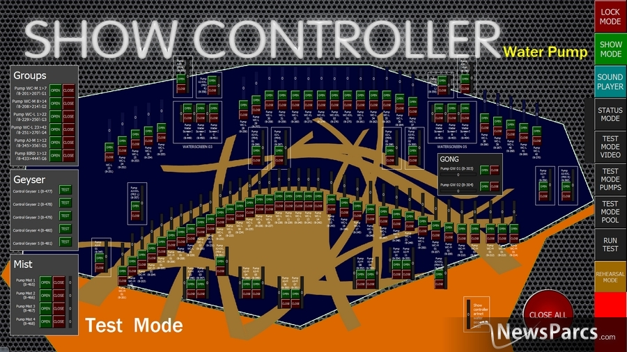
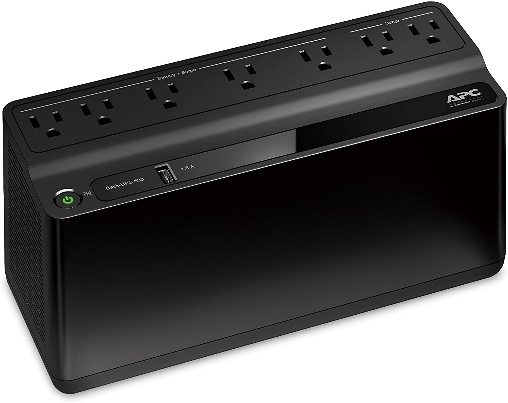
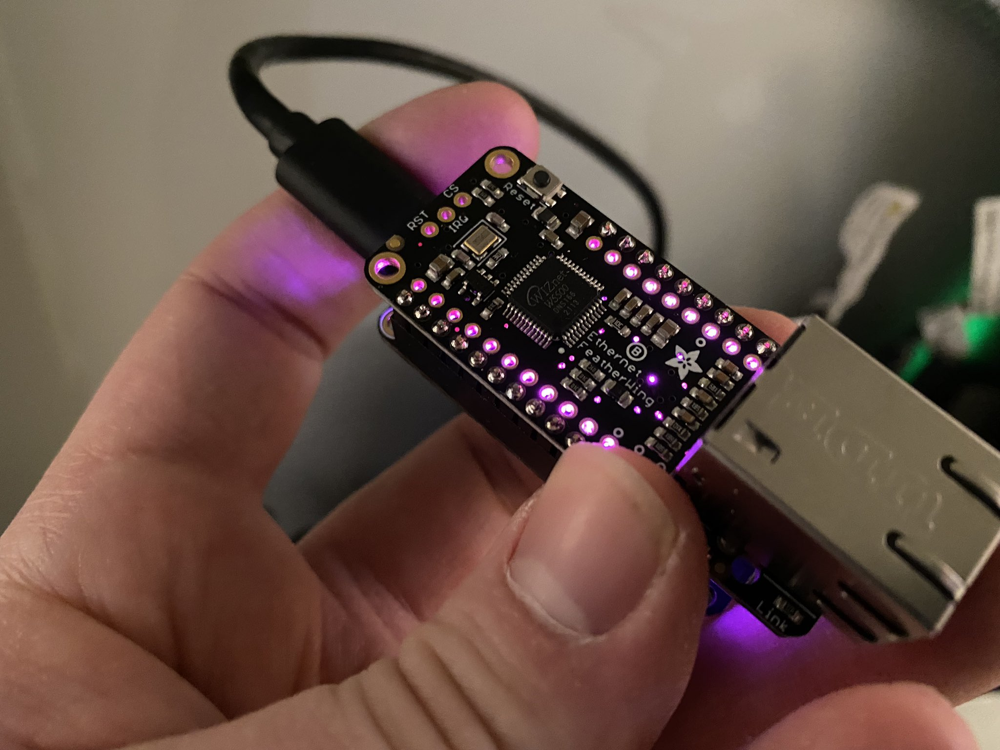
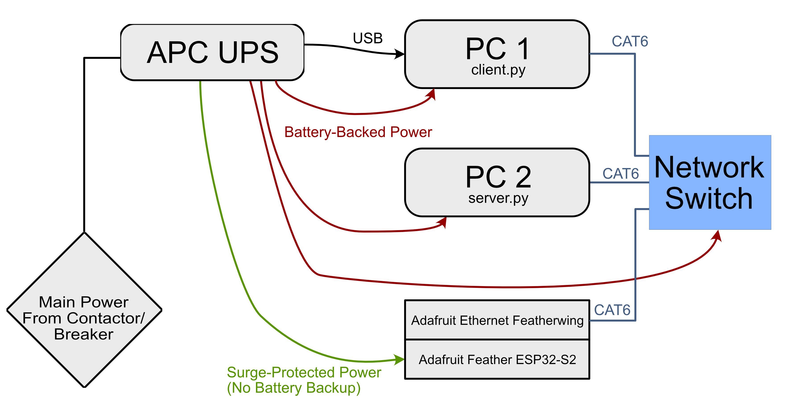
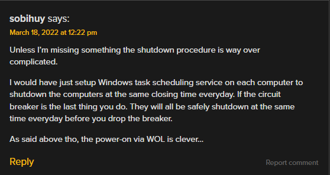
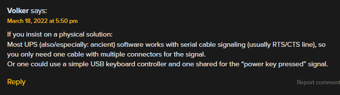
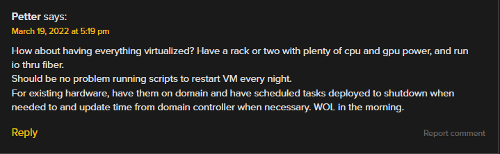

Soft Shutdown and Consistent Boot on Power Loss
Tl;DR Computers hate having their power abruptly cut. A UPS, an Adafruit Feather board, and some python hackery keeps computers booting and shutting down gracefully when power is yanked and restored, deliberately or not.
Update: The comments on the Hackaday post had a lot of other interesting solutions, some of which I'd considered and some of which I didn't. Skip to the Other Solutions for evaluation of these.
My dayjob involves solving technical problems for a large, multi-acre education facility with over 400 computer-driven interactives. To prolong the life of these devices (many of which are built around off-the-shelf computers and monitors), we like to power them down after operating hours and start them up in the morning. These are mostly windows machines, and just like a desktop they love to be rebooted.
What makes this challenging is both the number and placement of these devices. While many are in dedicated control rooms with linked KVM systems, even using a mouse and keyboard to manually shut down 400 PCs would take the onsite staff far longer than designed, and could be error-prone. Worse, some computers are embedded inside consoles, cabinets, and displays, making the process of walking around and hitting power buttons (where accessible) or using a wireless keyboard (where not) even longer. The same is true of startup, except that a wireless keyboard isn't an option in that case. A central startup and shutdown solution is essential.

Not from my workplace, but grabbed from google images - just as an example of how involved a software-defined control system can be.
Of course, there are many ways to make this happen. The most ideal, when the money is available, is to use a central controller, like a Medialon System, Creston Controller, TouchDesigner interface, or similar. The control is put in charge of signalling the computers to wake up (via Wake-on-LAN), shut down (through proprietary software modules), and handles cycling remotely-controller AC breakers, turning projcets on and off via various ethernet protocols, and so on. The dream is for whoever's operating the system to press one button (or click one button on a screen) to have the whole system turn on, or off.
Life is rarely a dream.
We sometimes run into a situation where, for reasons of cost, planning, location, or timing, there is no exterior control of any kind. There's just a breaker in a panel (which may or may not be remote controlled) providing power to an installed cabinet. And as much as PC's love to be rebooted, they hate having their power yanked unexpectedly.
So the challenge is: given only control over their power, can we create a system that soft-starts and soft-shuts-down a PC? (Yes we can, or this would be a very short post.)
Shutdown
Getting a PC to soft shutdown on power loss is relatively straightfoward. There are (fairly fancy) networkable UPS systems and add-on cards that are meant just for this kind of thing. When mains power is killed, the UPS kicks into keep the computer(s) in question on, while sending a network message to do... whatever you want. Wait a minute then hibernate, run a backup, dump memory, etc.
Unfortunately, these solutions are somewhat cost-prohibitive, and also rather large. They seem designed for rackmount systems where they could be used to manage a bank of servers. The particular situation that I'm building this for for is very tightly space-confired, and doing it for less than a grand would be great.

A cheap, off the shelf, 300W / ~30wH UPS. At time of writing, about $60 shipped.
Thankfully, there's a way to make this work on a cheaper and smaller UPS. Many off-the-shelf UPS's have the abilitiy to connect directly to a single PC via USB connection. APC, who makes consumer UPSes, has such a connection on even their very basic units. They even include some basic software (Powerchute) that can tell the computer to hibernate, shutdown, wait a few minutes and shutdown, etc when the batteries kick in. Sounds perfect, no?
Not quite - we only have the ability to hook one computer directly to the UPS, but we'd like to power multiple small computers (often NUCs) off a single UPS. And there's no obvious way to hook into the Powerchute software directly. Having one UPS per computer would be an option, but a needlessly expensive one. Sometimes there's not even enough room for that to be possible.
The workaround is straightfoward - the Powerchute software logs an event to the Window System Log when it swtches to battery power. We can use Window's built-in task scheduling service to fire off a script of our choosing when this event occurs. Then it's just a matter of crafting some very basic network scripts to allow the UPS-connected computer to tell other computers to shut down, then shut itself down.
Here's what I came up with. It's not terrible robust, secure, or debuggable, but it's getting the job done for now. The client script runs on the computer connected to a UPS, and is triggered when the UPS switches to battery power. The server runs on as many connected computers as we want, and should be set to run at startup. The (static) IPs of the computers running the server script must be enterred in the client script.
client.py
"""
This is one of a pair of programs meant to allow one computer to shutdown many computers in an exhibit context.
This program ('client') is meant to run on the singular computer that recveives a set signal to shutdown the exhibit. This signal may come from a button or switch, a system log (Say, via UPS), etc, which then runs this script.
The server program should be running on any computers that need to be shutdown in this context.
This client program steps through the list of provided servers and tells them to shut down, then shuts itself down.
"""
import socket
import os
from time import sleep
socket.setdefaulttimeout(10)
PORT = 1933
MSG = b'SHUTDOWN NOW'
RSP = b"SHUTDOWN CONFIRMED"
deviceIPs = [
"172.16.0.2"
]
attempts = 0
MAX_ATTEMPTS = 5
print("Client program is contacting remote computers to shut them down")
while len(deviceIPs) > 0:
attempts += 1
if attempts > MAX_ATTEMPTS:
print(f"System could not shut down the following IPs: {deviceIPs}")
print("Shutting down self in 15 seconds")
sleep(15)
break
for ip in deviceIPs:
with socket.socket(socket.AF_INET, socket.SOCK_STREAM) as s:
print(f"Attempting to connect tp {ip}, attempt {attempts} of {MAX_ATTEMPTS} (timeout is {int(socket.getdefaulttimeout())}s)")
try:
s.connect((ip, PORT))
except TimeoutError as err:
print("Connection timed out")
continue
print(f"Connection successful, sending message: {MSG}")
s.sendall(MSG)
data = s.recv(1024)
print(f"Received {repr(data)}")
if data[:len(RSP)] == RSP:
print(f"Received shutdown confirmation message from host at ip {ip}")
deviceIPs.remove(ip)
else:
print(f"Got some other message than we expected from host at ip {ip}: {data}")
sleep(1)
else:
print("Successfully shut down all remote IPs, shutting down self in 10 seconds")
sleep(10)
os.system("shutdown /s /f /t 10")Scroll to see full code
server.py
"""
This is one of a pair of programs meant to allow one computer to shut down many computers in an exhibit context.
This program ('server') runs on any computer that is NOT receiving the direct singal to shut down.
The 'client' program should run on the singular computer in the exhibit context that receives the signal to shutdown the exhibit (from a UPS, switch, etc)
"""
import socket
import os
HOST = ''
PORT = 1933
MSG = b"SHUTDOWN NOW"
RSP = b"SHUTDOWN CONFIRMED"
print("Server program is listening for shutdown commands from primary client")
with socket.socket(socket.AF_INET, socket.SOCK_STREAM) as s:
s.bind((HOST, PORT))
s.listen()
conn, addr = s.accept()
with conn:
print(f"Connected by {addr}")
while True:
data = conn.recv(1024)
if data[:len(MSG)] == MSG:
print(f"Got shutdown MSG {data}")
conn.sendall(RSP)
os.system("shutdown /s /f /t 10")
else:
print(f"Got {data= } instead of expected {data[:len(MSG)]}")
if not data:
breakScroll to see full code
Startup

An Adafruit ESP-32 Featherwing - the purple Neopixel light indicates the unit has booted but does not see an attached ethernet cable
Almost every BIOS has the ability to wake the system when power is restored following an unexpected power loss. Most have the ability to boot the computer when power is removed and restored, regardless of whether the computer was gently shut down or rudely had its power cut. Unfortunately, neither of these options work for us - since the computer is on a UPS, as far the the power supply is concerned, the computer never loses power. So, we'll have to rely on some other mechanism to detect when power is restored to cause the computer(s) to boot.
The hammer for this particular nail is a small, ethernet-capable microcontroller that sends out Wake-on-LAN packets at regular intervals whenever its powered on. We plug this microcontroller into an outlet not backed by the UPS - when power is lost, the microcontroller shuts off almost immediately, allowing the computers to shut down as above. When power is restored, the microcontroller starts up and, after a brief delay, starts sending out Wake-On-LAN messages to all the MAC addresses it knows about.
I chose the Adafruit ESP-32 Feather for a couple reasons. One, Python is my language of choice for hacking things together, and I was excited to play more with CircuitPython. Second, Adafruit's commitment to documentation and process is just great, and I wanted to get this project up on its feet quickly. And third, Adafruit's Featherwing line of accessory boards (specifically the Ethernet Featherwing) made it easy to get an Ethernet Stack and PHY running with minimal custom effort.
So, I bashed together the following code to wake up, establish a network connection, and send a Wake-On-LAN message to each MAC address in a given array every 15 seconds or so:
code.py
# SPDX-FileCopyrightText: 2021 ladyada for Adafruit Industries
# SPDX-License-Identifier: MIT
import board
import busio
import digitalio
import neopixel
from time import sleep
from adafruit_wiznet5k.adafruit_wiznet5k import WIZNET5K, SNMR_UDP, SNSR_SOCK_UDP
import adafruit_wiznet5k.adafruit_wiznet5k_socket as socket
import adafruit_requests as requests
pixel = neopixel.NeoPixel(board.NEOPIXEL, 1)
targetMACs = [
[0x12,0x34,0x56,0x78,0x9A,0xBC], #Computer NW
[0x12,0x34,0x56,0x78,0x9A,0xBD], #Computer NE
#... more computers as necessary
]
# Initialize ethernet interface with DHCP
cs = digitalio.DigitalInOut(board.D10)
spi_bus = busio.SPI(board.SCK, MOSI=board.MOSI, MISO=board.MISO)
eth = WIZNET5K(spi_bus, cs, is_dhcp=False)
ip = eth.unpretty_ip("172.16.0.10")
subnet_mask = eth.unpretty_ip("255.255.0.0")
gateway = eth.unpretty_ip("172.16.0.10")
dns = eth.unpretty_ip("172.16.0.10")
eth.ifconfig = (ip, subnet_mask, gateway, dns)
#If using DHCP, uncomment the following line
#eth.ifconfig = (ip, subnet_mask, None, None)
print("Assigned Ethernet Address: " + str(eth.pretty_ip(eth.ip_address)))
#Built-in neopixel will be purple while waiting for Ethernet to connect
pixel[0] = (255,0,255)
retry = True
while retry:
retry = False
try:
eth.socket_connect(0, eth.unpretty_ip('172.16.255.255'), 556, conn_mode=SNMR_UDP)
except AssertionError as err:
print(str(err) + ", retrying in 10 Seconds")
retry = True
sleep(10)
status = eth.socket_status(0)
if [int(b) for b in status] == [SNSR_SOCK_UDP]:
print("Socket 0 connected as UDP")
else:
print(f"Socket not connected, status is {status}")
retry = True
sleep(10)
#Built in neopixel will be blue when standing by to send WOL packets
pixel[0] = (0,0,255)
sleep(5)
while True:
#Built in neopixel will be green when sending WOL packets
pixel[0] = (0,255,0)
for i, target in enumerate(targetMACs):
fullPacket = bytearray([0xFF] * 6 + target * 16)
print(f"Sending WoL packet to computer {i} with mac address {eth.pretty_mac(target)}")
eth.socket_write(0, fullPacket, 1)
sleep(.1)
pixel[0] = (0,0,255)
sleep(15)
eth.socket_close(0)Scroll to see full code
If you're making use of this code yourself, you'll need the following libraries in your CIRCUITPY/libs folder:
- adafruit_wiznet5k
- adafruit_requests.mpy
- neopixel.mpy
And, if it's helpful, here is the basic process of getting the ESP32-S2 feather up and running (summarized from Adafruit's excellent guide):
- Download the appropriate Bootloader .BIN File
- Put the board in bootloader mode
- Use the online Adafruit ESPTool and Webserial tool to burn BIN file to the ESP32
- Reset the feather - it will appear as an attached USB drive called CIRCUITPY, onto which the above code can be dropped
System Diagram

Step-by-Step Instructions
For those who came here looking for an actual step-by-step how-to, here's the full process of getting this system set up. (This is based on my particular steps with the Intel NUCs and APC UPS in the most recent setup - some steps, especially relating to the BIOS, may need to be adjusted for your hardware.)
Computer Info Gathering
- Identify the MAC addresses of the relevent NICs on all the computers you intend to use.
Feather Prep
- Solder headers onto the Adafruit ESP32 Feather and Ethernet featherwing, as necessary. Attach the two together.
- Using the steps above, prepare the feather with its bootloader.
- Load the code above onto the Feather.
- Modify the list of MAC addresses in the code to include all of the MAC addresses you previously identified.
Physical Install
- Install the UPS, connected to the (switchable or unpredicable) power source. It may need to charge for several hours before it's usable.
- Install the network switch, plugged into the battery-backed power on the UPS. A cheap unmanaged switch will do.
- Install the computer(s). Plug them into the battery-backed power on the UPS
- Plug the Feather assembly you prepped earlier into the NON-battery-backed power on the UPS.
- Use CAT cables to attach the computers and Feather to the network switch.
Wake on Lan Setup
- In both computer's BIOS's":
- Make sure 'Wake on LAN from S4/S5 is set to 'Power On - Normal Boot'
- Make sure 'Deep S4/S5' is Off
- In both computer's Device Managers:
- Find the network interface that is plugged into the network switch, and open its settings.
- In the Power Management Tab:
- Make sure 'Allow the computer to turn off this device' is OFF
- Make sure 'Allow this device to wake the computer' is ON
- In the Advanced Tab: Make sure 'Wake on Magic Packet' is ENABLED
Control Computer Setup
This will be the computer listening to the status of the UPS, and telling the other computers to turn off. There should be only one per setup.
- Assign the computer a static IP on the NIC you're using. The code above assumes this is
172.16.0.1 - Plug the USB cable from the UPS into the control computer.
- If not prompted, manually download and install the Powerchute Control Software
- Unplug the UPS from wall-power once and plug it back in, to log the necessary events in the System Log.
- Install Python. I used Python 3.10.0 at time of writing, but any later version should also be fine.
- Copy the
client.pycode from above to a convienient file location on the computer (desktop, My Documents, etc). - In Task Scheduler, add a new event:
- Title: Shutdown on Power Loss to UPS
- Triggers:
- On an Event
- Log: Application
- Source: APC UPS Service
- Actions:
- Start a Program
- Select
client.pyscript from wherever you put it
Target Computer Setup
These computers will run a script on boot that listens for commands from the client computer to shut down. There can be as many of these per system as you like.
- Assign the computer a static IP on the NIC you're using. The code above assumes this is
172.16.0.2; if you add additional computers, you will need to add them to them to the deviceIPs array in theclient.pyscript. - Install Python. I used Python 3.10.0 at time of writing, but any later version should also be fine.
- Copy the
server.pycode from above to a convienient file location on the computer (desktop, My Documents, etc). - Create a shortcut to the
server.pyscript in your startup folder. In Windows 10, this is located by default at:C:/users/{username}/AppData/Roaming/Microsoft/Windows/Start Menu/Programs/Startup.Any shortcuts/executables in this folder get executed automatically when Windows boots.
Other Solutions Considered (March 21, 2022)#
The commenters over at Hackaday had some opinions and thoughts about other ways to accomplish this - which is great! It's certainly a fairly large nail and there are lots of hammers. Hackaday Columnist Chris Wilkinson even asked readers "how [they] would have tackled this problem? Sound off in the comments below." And boy did they.
So, let me address some of the proposed solutions and concerns, with some background that I didn't provide in the original post.
Scheduled Shutdown

Many, many of the comments suggested using some version of Windows' scheduled shutdown feature to turn the computers off at the same time every day. This is a very reasonable suggestion, and in fact was the solution in place before I undertook this project. There was a scheuled shutdown at 4:10pm every day (shortly after "normal" closing) and another at midnight (after "the latest the museum could be open").
The issue is that the museum's span-of-day changes wildly day-to-day, week-to-week, and month-to-month without notice. Sometimes closing is at 5:30pm. Sometimes 8:00pm or 11:00pm for an event. Sometimes it needs to be shut off at 3pm for photo sessions in the space. While I wish we had the ability to accurately describe the closing time of the museum on a day-to-day basis, like any large public-facing institution with an events staff, things change quickly and regularly. This pretty much ruled out scheduled shutdown.
Remote Management Commands
I wrestled with this solution for a fairly long time, but ultimately deemed it unsuccesful in Windows 10 personal (the OS I'm forced to use). To be honest, I can't recall what every single obstacle was, but some were:
- Needing to address each computer by hostname, with the hostnames having some character restrictions (which I could not change)
- Not having an Active Directory/Domain setup in this environemnt. For any number of reasons, we keep interactives isolated from our workplace domain system, so there's no Active Directory to be used.
- Several Resources suggest needing to make registry changes to enable remote shutdown, and while I tried several of these, none were successful. This also doesn't seem like the most durable/transportable solution. The various uses of batch files and services at affect the same didn't work for me either - not saying there wasn't something I missed, but it wasn't anywhere near as simple as run
shutdown /r /m \\pc2and walk away. - One of the comments suggested using Ansible, which I may have to give a look.
UPS With Lan Card
A couple users encouraged me to look at UPS' that can be directly connected to a network, which would save the whole client-server model of the hacky python scripts above.
This is something we looked at as well, but discarded for space reasons. The entire space inside the primary enclosure this project was designed for is only 5" deep, which ruled out any rackmount components, which seem to be the major source of UPS' with LAN interfaces. The standalone UPS' with LAN attachability were either too large or two expensive for this project.
Read Only Harddrives
Here's something I hadn't thought about - making the hard drives read only to prevent damage in the case of an untimely shutdown. Didn't know that was a thing! Stil not sure it's a thing, will have to look into it more.
RTS/CTS Signalling

Another expansion of an idea I had discarded - the UPS' all have some varient of serial lines on them, but I assumed using serial to connect to the UPS' was out for the same multi-computer reason that lead to me using the client/server model. But if it's really just a binary on/off signal on one of the control lines, there's no reason I couldn't read that simultaneously on several machines. Interesting!
Virtualization

Make all the intereactives virtualized and run in their own VMs?? Now there's something that would never have crossed my mind. It's probably way out of scope for the kind of retrofit work that I've been tasked with doing, but it's a nifty idea if we had the will and archetechture to handle it.